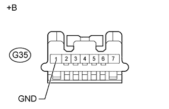
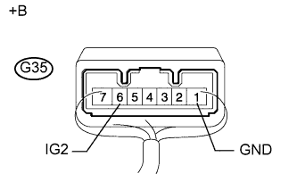

DTC B2788 Неисправность в цепи сигнала IG2 |
| Код DTC | Условие обнаружения | Неисправный участок |
| B2788 | Подаваемый в ЭБУ блокировки рулевого управления сигнал IG2 не соответствует данным, получаемым по шине LIN. |
|
| 1.ПРОВЕРЬТЕ ПРИВОД БЛОКИРОВКИ РУЛЕВОГО УПРАВЛЕНИЯ (ЭБУ БЛОКИРОВКИ РУЛЕВОГО УПРАВЛЕНИЯ) |
|  |
Отсоедините разъем G35 ЭБУ блокировки рулевого управления.
Измерьте сопротивление в соответствии со значениями, приведенными в таблице ниже.
| Контакты для подключения диагностического прибора | Условие | Заданные условия |
| G35-1 (GND) - масса | Всегда | Менее 1 Ом |
| *a | Вид спереди разъема со стороны жгута проводов: (к ЭБУ блокировки рулевого управления) |
|  |
Подсоедините разъем G35 ЭБУ блокировки рулевого управления.
Измерьте напряжение в соответствии со значениями, приведенными в таблице.
| Контакты для подключения диагностического прибора | Положение переключателя | Заданные условия |
| G35-6 (IG2) - G35-1 (GND) | Зажигание включено (IG) | 11 - 14 В |
| G35-6 (IG2) - G35-1 (GND) | Зажигание выключено | Менее 1 В |
| *a | Устройство с подсоединенным жгутом проводов (ЭБУ блокировки рулевого управления) |
| Результат | Следующий шаг | |
| NG | А | |
| OK | для моделей с наклонной телескопической рулевой колонкой с ручным приводом | B |
| для моделей с наклонной телескопической рулевой колонкой с электроприводом | C | |
|
| ||||
|
| ||||
| А | ||
| ||